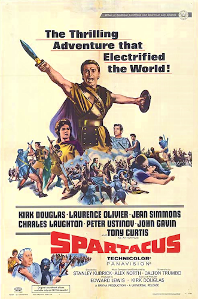

Spartacus
33rd Academy Awards
(Oscars 1961)
6 Nominations, 4 Awards
| Nominations | ||
|---|---|---|
| Category | Nominees | Result |
| Actor in a Supporting Role | Peter Ustinov | Won |
| Cinematography (Color) | Russell Metty | Won |
| Film Editing | Robert Lawrence | Nominated |
| Art Direction (Color) | Alexander Golitzen, Eric Orbom, Julia Heron, and Russell A. Gausman | Won |
| Costume Design (Color) | Bill Thomas and Valles | Won |
| Music (Music Score of a Dramatic or Comedy Picture) | Alex North | Nominated |